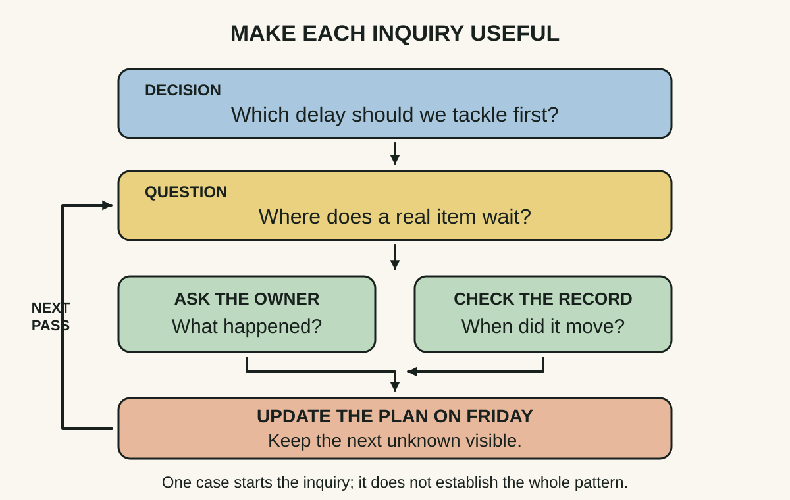
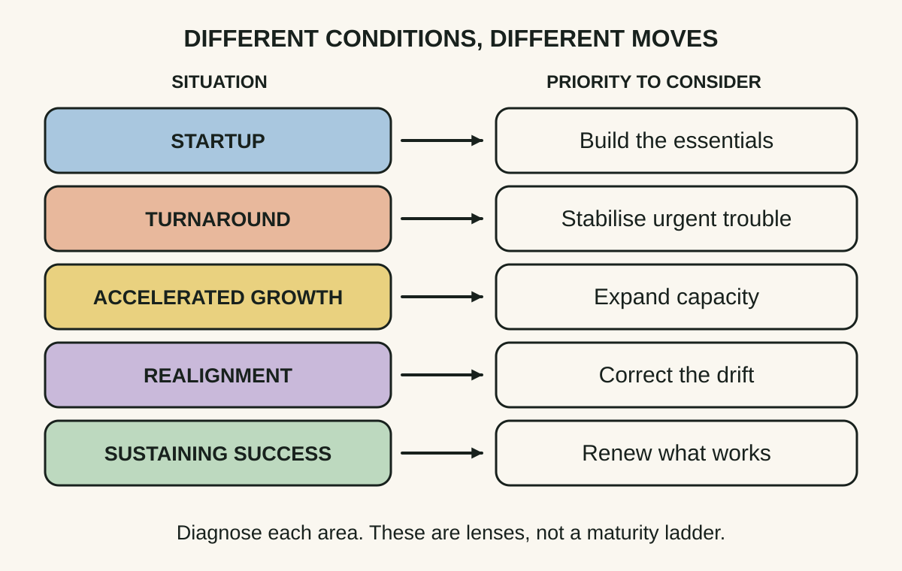
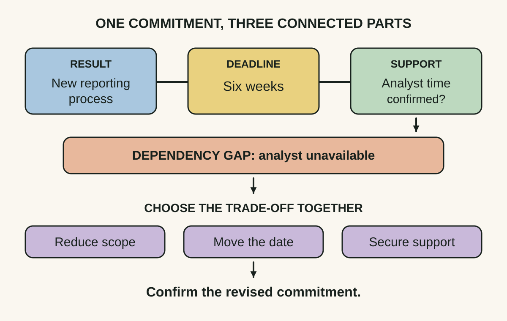

Daily lesson ·
The First 90 Days
Turn a new responsibility into a learning plan, match your approach to the situation you inherited, and agree what success requires before promises harden.
Idea 1
Give your learning a decision to serve #
The idea
Watkins treats learning as planned work. A newcomer should identify what they need to understand, then choose ways to learn it. Collecting every available report can consume the transition without revealing how decisions actually get made.
His warning about arriving with a ready-made answer has a social consequence: people may stop offering information when they think the newcomer has already decided. Inquiry needs both a clear agenda and contact with the people who know the work.

Why it matters
A packed induction calendar can create familiarity without judgement. A decision-linked agenda makes a gap visible: you can know the reporting structure while still not knowing who can approve the change you intend to make.
Apply it today
Choose one decision you must make in the next fortnight. Write the two unknowns most likely to change it.
For one unknown, pair a person close to the work with a concrete record or example. Ask what happened last time, note where their accounts disagree, and give the next check a date.
Caveat or failure mode
Learning can become a respectable way to postpone action. If a service is failing or people are at risk, contain the immediate problem while learning. Also avoid turning conversations into interrogations: explain the decision you are trying to make and share what you have understood.
Idea 2
Match the move to the situation #
The idea
Watkins’s STARS framework distinguishes startup, turnaround, accelerated growth, realignment and sustaining success. These situations call for different emphases: building capability, addressing acute trouble, coping with expansion, correcting drift or preserving and renewing strong performance.
A role can contain a mix. A healthy business may still have an area needing realignment. The label is a prompt to examine the task, not a reason to force the entire organisation into one category.

Why it matters
A new leader can damage a capable team by performing a rescue it does not need. The reverse error is also costly: slowly building consensus while a genuine crisis worsens. The diagnosis changes both the intervention and its pace.
Apply it today
Pick one area you now own. Write the closest STARS situation and one observed fact supporting it.
Name a plausible alternative diagnosis and the evidence that would favour it. Compare your provisional view with someone accountable for the outcome before announcing a sweeping change.
Caveat or failure mode
The categories simplify reality and are not a validated scoring system. Do not diagnose a turnaround from one bad week or infer that sustaining success means leaving everything alone. Different parts of the work may need different approaches, and the diagnosis can change.
Idea 3
Agree the conditions of success #
The idea
Watkins proposes conversations with a new manager about the situation, expectations, resources, working style and personal development. Agreement about a job title does not establish agreement about what to deliver, when, with what support, or how to work together.
These conversations can reveal a mismatch before it becomes a performance dispute. Expectations also need revisiting as the newcomer learns more; an initial mandate is not automatically a feasible final plan.

Why it matters
People can use the same word, such as faster, while expecting different outcomes. A short agreement exposes whether speed means a shorter approval queue, an earlier release or less customer waiting. It also makes a resource gap discussable.
Apply it today
Take one current commitment and write the observable result, the date and the support you are assuming. Underline anything the other person has not confirmed.
Use the next existing check-in to resolve the most consequential gap. If a dependency is unavailable, propose a specific change to scope, timing or support and record the revised agreement.
Caveat or failure mode
A conversation cannot create authority, budget or a reasonable manager. Record unresolved disagreements plainly, use appropriate escalation where needed, and do not present an unconfirmed assumption as a commitment. Revisit the agreement when facts change rather than turning the recap into a weapon.
Knowledge check · 6 questions
Learning check
Answer all 6, then check your answers. Your first result stays in this browser, and each explanation appears after you check. A 3-question review can appear on the homepage from tomorrow.
6 questions not yet answered.
Today's experiment · 8 minutes
Write a one-page transition brief
- Minutes 0–2: choose a real new responsibility, or an existing one whose expectations feel unclear. Write one decision you must make in the next fortnight.
- Minutes 2–4: name your largest unknown, a person or record that could inform it, and a date for checking. Add a provisional STARS diagnosis with one supporting observation.
- Minutes 4–6: write one promised result, its deadline and its most important resource assumption. Mark each as confirmed or unconfirmed.
- Minutes 6–8: draft one question for your next check-in that would resolve the biggest gap. Do not send anything as part of the experiment; finish with a brief you can inspect.
Observable result: One page with a decision, a dated learning task, a provisional situation diagnosis and a commitment whose unconfirmed dependency is visible. Count the unconfirmed assumptions; that is your starting point, not a score of personal competence.
Retrieval practice
Spaced recall
- From Thanks for the Feedback: how would you distinguish a request for coaching from a request for evaluation in a new role?
- From Working Identity: what small experiment could test whether a possible role fits you before you commit to it?
- From The Mythical Man-Month: what coordination costs could make an apparently generous staffing promise less useful than it looks?
Verification
Source notes
These links support the attributed claims and edition details; applications and extensions are labelled in the lesson.
- Harvard Business Review Press: 2013 updated and expanded edition, publication details and scope
- IMD book record: tenth-anniversary edition and the original 2003 publication
- Watkins, chapter 2 preview: Accelerate Your Learning; primary book attribution and chapter structure
- Watkins at IMD: Transition traps; practitioner guidance on systematic inquiry and revisiting expectations
- Watkins and colleagues at IMD: situational diagnosis and the STARS mix; contextual leadership guidance
- Watkins interview on Genesis Advisers: five conversations about success; primary explanation, not a guarantee
- Genesis Advisers: the author’s learning, situation and alignment modules; commercial practitioner material
One-sentence takeaway